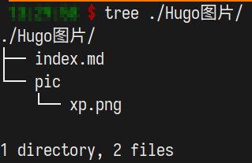

如题
Hugo图片插入，看到的其他人的做法大多是将其放在一个目录下，比如说static.
但是我的vim插件使用的相对路径，图片都保存到当前目录下的pic文件夹中。在生成网页后，也全部采用的相对路径，导致图片路径未找到。
好在，hugo应该是提供了解决方案的，之前还在困惑说为什么一个md文件，hugo会生成这个名字的目录，然后再是index.html。在这里同样利用一下。
方法就是，不直接生成md文件作为某一篇post，而是新建文件夹，然后在其中创建文件夹，文件夹中存放index.md才是post的内容，多了一层。这样的好处就是，在这个post目录下，图片的pic文件夹就和md文件同级，可以引用，同时，hugo也会生成相应的目录，完美解决了图片的问题。o
